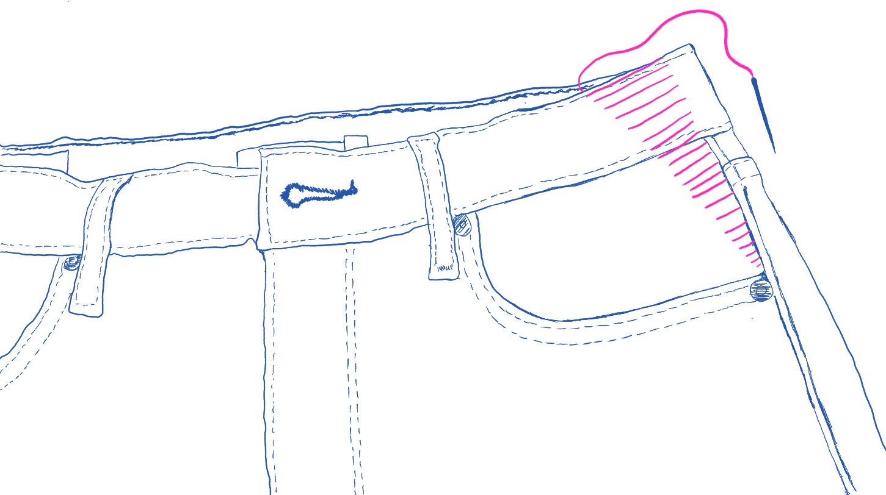

DIFFICULTY
MATERIALS
Chalk

90 / 14 Gauge Needle
Ruler / Measuring Tape

Embroidery Thread / 2-3 Pieces of Thread

REPAIR GUIDE
This website contains stitches and mends I know and often use on my clothing. Using a needle and thread is deeply human and all of the fabrics we wear have been put together by a person. Repairing clothes brings a sense of connection to daily material objects and it’s an opportunity to co-design with the humans who make our garments. I believe we should all possess some level of skill to bring new life to our clothes.
Mend with obviousness and glee, showing your mend is showing your heart on your sleeve. Look how I’m keeping this dear old thing alive
BASIC MATERIALS
Chalk
90 / 14 Gauge Needle
Ruler / Measuring Tape
Embroidery Thread / 2-3 Pieces of Thread
LADDER STITCH - TAKE IN WAIST
A ladder stitch or an invisible stitch is used to take in fabric, this is an accessible and easy way to alter pants yourself at home. This technique involves creating a series of small, parallel stiches along the existing seam line which resemble the steps of a ladder. This stitch is discreet and durable, it could also be removed easily.
INSTRUCTIONS
Start with trying on your jeans and using a measuring tape to determine the necessary adjustment.
Mark a point X inches away from the straight seam on the side of the jeans, this point should be right along the top of the jeans.
Mark another point where the pocket meets the straight seam.
Connect the points making a diagonal line with the chalk and mark the straight line. Both lines should make a triangle.
Get a needle and thread ready – loop thread through needle and make a knot.
Start from the inside of the jeans puncturing the point at the pocket and bringing the thread outside of the jeans.
Next, sew above the previous point following the straight seam, keep your needle parallel to the fabric, pointing to the top of the jeans and go in then out.
Parallel to the stich previously made make the same stitch on the angled marked side.
Go back to the straight seam and make the same stich.
Go to angled line and make the same stitch.
Do this all the way to the top of the jeans.
Your last stitch should have the needle and thread inside the jeans.
Pull the thread until the fabric comes together and you can’t see the stitch anymore.
Finish with a knot on the inside and cut.